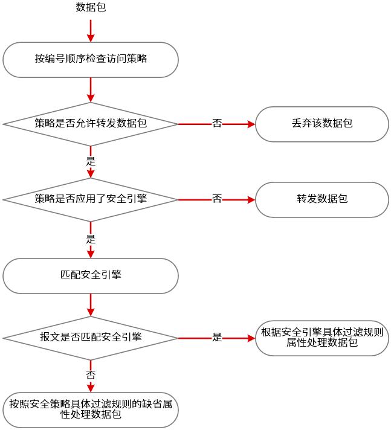

NGFW通过配置访问控制规则对设备各个接口之间的数据转发进行控制。一般情况下，访问控制规则分为两部分：过滤条件和行为：过滤条件由安全域间流量的源安全域/源地址、目的安全域/目的地址、服务类型、时间等构成；行为主要指NGFW对符合过滤条件的报文进行的处理动作。策略规则都有其独有的ID号，一般会在定义规则时自动生成；NGFW的所有策略规则有特定的排列顺序，管理员也可以按照自己的需求设置策略规则的排列位置。策略规则的排列位置可以是绝对位置，即处在首位或者处在末位，也可以是相对位置，即位于某个ID之前或之后；在流量进入系统时，系统会对流量按照找到的第一条与过滤条件相匹配的策略规则进行处理。同时，对于定义的策略规则，NGFW提供了对规则的分组管理功能，不同组之间的前后顺序和组内规则的排列顺序共同决定访问控制规则的匹配顺序。
此外，访问控制规则与安全引擎相结合，引用安全引擎的策略配置信息帮助NGFW完成细粒度的应用层访问控制。安全引擎可以针对不同的应用定义不同的操作，将复杂控制信息简单化，从而简化安全网关的配置；同时每一类安全引擎可以针对具体应用分别配置不同的控制动作。如果策略中定义了某一类安全引擎策略，那么安全引擎会在匹配过滤条件后检查报文是否包含相应的内容，若包含则按照该安全引擎中配置的处理动作处理该报文。访问控制策略规则的匹配流程如下图所示。
